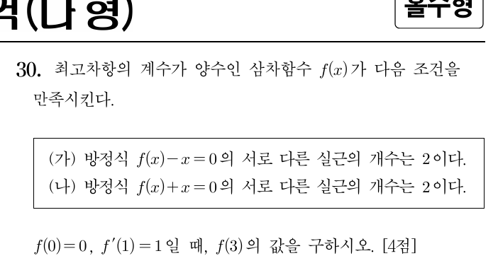

2020학년도 수능 나형 30번 · 단답형 4점 · 정답 51
실제 수능 문제지다. "서로 다른 실근의 개수"라는 말을 그래프로 번역하는 문제다.

* 원문제: 최고차항의 계수가 양수인 삼차함수 \(f(x)\)가 다음 조건을 만족시킨다. (가) 방정식 \(f(x)-x=0\)의 서로 다른 실근의 개수는 2이다. (나) 방정식 \(f(x)+x=0\)의 서로 다른 실근의 개수는 2이다. \(f(0)=0,\ f'(1)=1\)일 때, \(f(3)\)의 값을 구하시오. [4점]
"방정식 \(f(x)-x=0\)의 근"은 "곡선 \(y=f(x)\)와 직선 \(y=x\)의 교점"이다. 삼차방정식이 서로 다른 실근을 2개 가진다는 것은, 세 근 중 하나가 겹쳤다(중근)는 뜻이고, 그래프로는 두 그래프가 한 점에서 접한다는 뜻이다. 이 번역이 문제의 전부다.
대수적 조건을 기하학적 장면으로.
\(f(x)-x=0\)은 최고차항이 양수인 삼차방정식이다. 삼차방정식의 서로 다른 실근이 2개라는 것은:
마찬가지로 (나)는 "곡선 \(y=f(x)\)와 직선 \(y=-x\)가 한 점에서 접한다"는 뜻이다.
Q1. 최고차항이 양수인 삼차방정식이 "서로 다른 실근을 2개" 가질 때, 그래프의 모습은?
정답! 중근(접함) 하나 + 단일근(만남) 하나 = 서로 다른 실근 2개다.
삼차방정식의 근은 (중복 포함) 3개다. 서로 다른 것이 2개라면, 중복되는 구조는?
인수분해의 실마리.
\(f(0)=0\)이므로 점 \((0,0)\)은 곡선 \(y=f(x)\) 위의 점이다. 그런데 \((0,0)\)은 직선 \(y=x\) 위에도, \(y=-x\) 위에도 있다!
\(f(x)=ax^3+bx^2+cx+d\) (\(a>0\))라 두면 \(f(0)=0\)에서 \(d=0\). 인수분해하면:
\(x=0\)은 두 방정식의 공통근이다. "서로 다른 실근 2개"가 되려면, \(x=0\)이 중근이거나, 뒤의 이차식이 중근을 가져야 한다.
Q2. \(f(x)-x=0\)이 서로 다른 실근을 2개 가지려면? (단, \(x=0\)은 항상 근)
정답! \(x=0\)이 중근이면 근은 \(\{0, -\frac{b}{a}\}\) 2개. 이차식이 중근이면 근은 \(\{0, \text{중근}\}\) 2개. 둘 중 하나다.
\(x=0\) 말고 남은 근은 이차식 \(ax^2+bx+(c-1)=0\)에서 나온다. 서로 다른 실근이 총 2개가 되는 경우를 세어보자.
논리로 경우를 쳐내는 것이 이 문제의 심장이다.
| (가) \(f(x)-x=0\) | (나) \(f(x)+x=0\) | |
|---|---|---|
| A안: \(x=0\)이 중근 | \(c=1\) (\(b\ne 0\)) | \(c=-1\) (\(b\ne 0\)) |
| B안: 이차식이 중근 | \(b^2=4a(c-1)\) | \(b^2=4a(c+1)\) |
\(c\)는 \(1\)과 \(-1\)을 동시에 만족할 수 없다. 조합을 따져보자:
* 기하학적 의미: 곡선 \(y=f(x)\)는 직선 \(y=x\)와 원점 \((0,0)\)에서 접하고, 직선 \(y=-x\)와는 다른 점 \(\left(-\frac{b}{2a}, \frac{b}{2a}\right)\)에서 접한다.
Q3. (B, A') 조합이 불가능한 이유는?
정답! (B)는 \(b^2=4a(c-1)\), (A')는 \(c=-1\)을 요구하므로 \(b^2=-8a\). \(a>0\)이면 우변이 음수라 실수 \(b\)가 없다.
각 안이 요구하는 \(c\) 값을 대입해서 \(b^2\)의 부호를 확인해보자.
STEP 3에서 \(c=1\)이 확정됐다. 이제 \(f(x)=ax^3+bx^2+x\)에서 \(a,b\)를 움직이며 \(y=-x\)와 접하는 순간을 찾아보자.
\(y=f(x)=ax^3+bx^2+x\)\(y=x\) (원점에서 접함)\(y=-x\)
관찰 1 \(y=x\)는 \(a,b\)를 어떻게 움직여도 항상 원점에서 \(f\)와 접한다 (\(c=1\)의 힘).
관찰 2 \(b\)를 움직여보자. \(f(x)+x=0\)의 실근 개수가 1→2→3으로 바뀐다. 개수가 정확히 2가 되는 순간, 곡선이 \(y=-x\)에 접한다!
관찰 3 접하는 순간의 \((a,b)\)에서 \(b^2\)과 \(8a\)를 비교해보자. (STEP 3의 결론과 일치한다.)
마지막 숫자 조건.
\(f'(x)=3ax^2+2bx+1\)에서:
\(b^2=8a\)에 대입: \(\frac{9}{4}a^2=8a\). \(a>0\)이므로:
정답 51